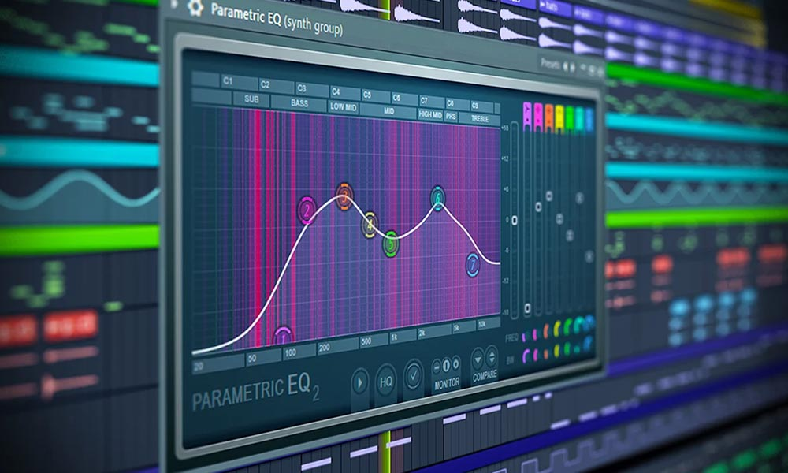
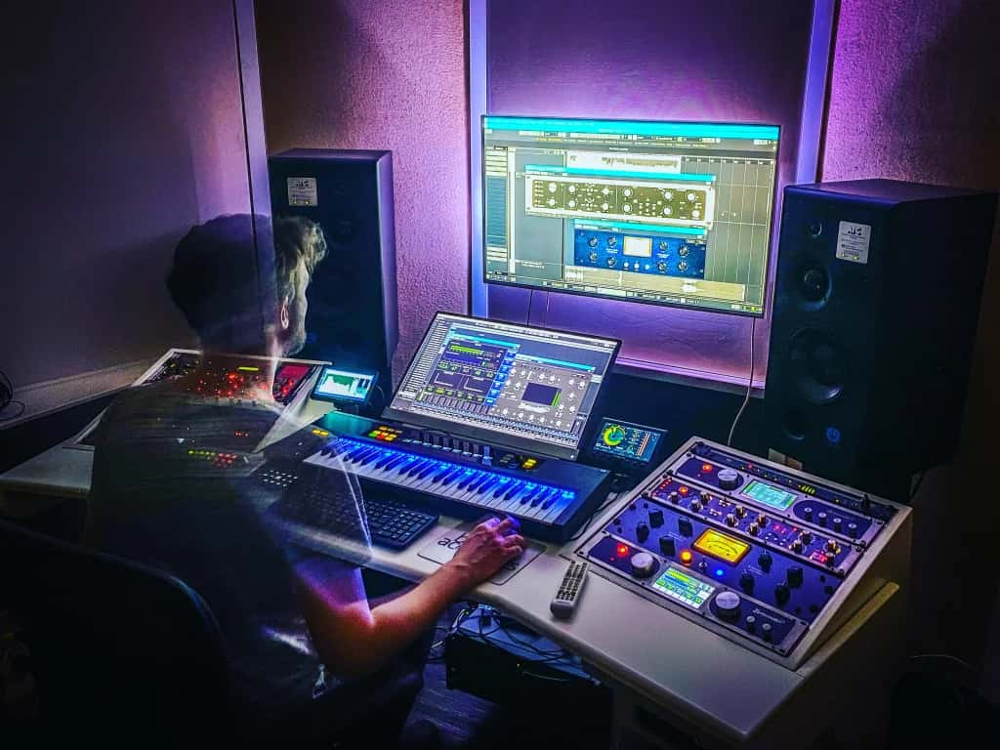

La diferencia entre un track amateur y uno profesional no está solo en la composición, sino en la calidad de la mezcla y masterización. Estos procesos transforman tus ideas musicales en producciones pulidas que pueden competir en cualquier plataforma. En este artículo, exploraremos las técnicas esenciales para llevar tus tracks al siguiente nivel.
¿Qué es la Mezcla?
La mezcla es el proceso de combinar todos los elementos individuales de tu track (drums, bass, synths, vocales) en una mezcla cohesiva y balanceada. Es donde le das forma al espacio sonoro y aseguras que cada elemento tenga su lugar en el mix.
Fundamentos de la Mezcla
1. Gain Staging (Gestión de Niveles)

Antes de empezar a mezclar, asegúrate de que tus niveles sean correctos:
- Ningún canal individual debe superar los -6 dB
- Tu master fader debe tener headroom (espacio) de al menos -6 dB
- Usa tu oído, no solo tus ojos en los medidores
- Empieza con todos los faders abajo y ve subiendo gradualmente
2. Panoramización (Panning)
El panning crea amplitud estéreo y separa los elementos en el campo sonoro:
- Centro: Kick, snare, bajo, vocal principal
- Ligeramente a los lados: Hi-hats, percusión secundaria
- Extremos: Efectos, ambientes, doubles de vocal
Tip: Si panoramizas un elemento a la izquierda, balancea con otro similar a la derecha para mantener el equilibrio.
3. Ecualización (EQ)

El EQ es tu herramienta más poderosa para limpiar y dar claridad al mix:
EQ Substractivo (Limpieza):
- Elimina frecuencias bajas innecesarias con high-pass filters (excepto en kick y bajo)
- Busca y elimina resonancias molestas con cortes estrechos
- Reduce frecuencias que compiten entre instrumentos
EQ Aditivo (Realce):
- Realza frecuencias que definen el carácter del sonido
- Usa boosts amplios y suaves (no más de 3-4 dB)
- Prioriza cortar antes que aumentar
Rangos Frecuenciales Importantes:
- Sub-bass (20-60 Hz): Potencia del kick y bajo
- Bass (60-250 Hz): Cuerpo de instrumentos graves
- Low-mids (250-500 Hz): Zona "muddy" - corta aquí si suena embarrado
- Mids (500 Hz-2 kHz): Presencia e inteligibilidad
- High-mids (2-5 kHz): Brillo y claridad
- Highs (5-20 kHz): Air y sparkle
4. Compresión
La compresión controla la dinámica, haciendo los sonidos más consistentes y "pegados":
Parámetros Esenciales:
- Threshold: Nivel donde comienza la compresión
- Ratio: Cantidad de compresión aplicada (2:1, 4:1, 8:1, etc.)
- Attack: Rapidez de la compresión (rápido = más control de transientes)
- Release: Rapidez de recuperación
- Makeup Gain: Recupera el volumen perdido
Aplicaciones Comunes:
- Kick/Snare: Attack rápido, release media, ratio 4:1
- Bass: Attack media, release rápida, ratio 3:1-5:1
- Vocals: Attack lenta, release automática, ratio 3:1-6:1
- Bus de drums: Attack media-lenta para "glue"
5. Reverb y Delay
Estos efectos crean profundidad y espacialidad:
Reverb:
- Usa reverbs cortos para intimidad
- Reverbs largos para atmósfera y drama
- Aplica high-pass filter al reverb (200-400 Hz) para evitar embarrar
- No todo necesita reverb - el kick y bajo generalmente van secos
Delay:
- Sincroniza con el tempo de tu track (1/4, 1/8, 1/16)
- Usa delays cortos como alternativa al reverb
- Filtra las repeticiones para que no compitan con el original
¿Qué es la Masterización?

La masterización es el paso final donde preparas tu track para distribución. Es el proceso de optimizar el audio para que suene lo mejor posible en todos los sistemas de reproducción.
Cadena de Masterización Básica
1. EQ de Masterización
- Ajustes sutiles para balance tonal general
- Elimina frecuencias problemáticas sub-30 Hz
- Añade "air" suavemente en 10-15 kHz si es necesario
2. Compresión Multibanda
- Control independiente de diferentes rangos de frecuencia
- Settings sutiles: 2:1 ratio máximo
- 1-2 dB de reducción de ganancia máximo
3. Compresión de Glue
- Unifica todos los elementos
- Ratio suave (1.5:1 - 2:1)
- Attack lento, release automático
4. Maximización/Limitación
- El limitador es tu última etapa
- Target: -8 a -6 LUFS para streaming (Spotify, Apple Music)
- -4 a -2 LUFS para clubes/SoundCloud
- Deja al menos 1 dB de headroom (no toques 0 dB)
Técnicas Profesionales
Tracks de referencia
Importa tracks comerciales de tu género en tu DAW para comparar:
- Balance tonal general
- Niveles de volumen
- Espacialidad estéreo
- Brillo y claridad
Monitoreo Mono
Revisa tu mezcla en mono regularmente para:
- Detectar problemas de fase
- Asegurar compatibilidad en sistemas mono
- Verificar el balance general sin la ilusión estéreo
Descansos Auditivos
- Toma pausas de 15 minutos cada hora
- Escucha tu mezcla al día siguiente con oídos frescos
- Prueba tu mix en diferentes sistemas (auriculares, coche, teléfono)
Errores Comunes a Evitar
- Mezclar demasiado fuerte: Baja el volumen de tus monitores
- Over-processing: Menos es más, especialmente en masterización
- Ignorar el contexto: Cada decisión afecta al conjunto
- No usar referencias: Compara siempre con tracks profesionales
- Mezclar en solo: Toma decisiones en el contexto del mix completo
Conclusión
La mezcla y masterización son artes que requieren años de práctica para dominar. No te desanimes si tus primeras mezclas no suenan perfectas. Lo importante es entender los conceptos fundamentales y aplicarlos consistentemente. Con tiempo, tu oído se entrenará y tus decisiones se volverán más acertadas.
Recuerda: Una gran mezcla empieza con un gran arreglo. Si tu composición es sólida, la mezcla será mucho más fácil.